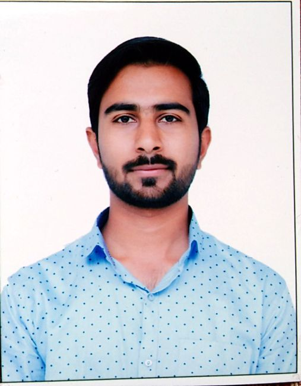

Abhilash Charhate

Summary
I am UI/UX Designer with innovative ideas and a user centered approach to solve problems. I have 5 years of experience in creating
designs for user interface such as Web Application, Mobile Apps for Android and iOS and Landing pages. I have experience in team
handling and conducting training workshops under Learning and Development program.
Education
- B.E. (Electrical Engineering) | 2014 - 2018
P. R. Pote College of Engg. and Technology, Amravati
- HSC | 2012 - 2014
Shri Shivaji Science College, Amravati
Work Experience
Harjai Computers Pvt. Ltd.
Product Designer | Nov 2022 - Present
- Collaborate with Project Managers and Stakeholders to gather project and user requirements.
- Conduct user research and evaluate user feedback to create User Personas, User Journey Mapping, User Flows, Task Flows
and Wireframes according to user needs.
- Implementing Mid-fidelity and High-fidelity Wireframes to create better user experience.
- Conduct UX Optimization to increase accessibility of information to increase conversion rate.
- Connect with developers and cross functional teams for the completion of the projects within given timeline.
- Create and maintain design libraries, style guides and design systems to ensure consistency across platforms and products.
Ordinet Solutions Pvt. Ltd.
UI/UX Designer | Nov 2019 - Oct 2022
- Design landing page, web application and mobile applications for both Android and iOS platforms.
- Responsible to create UI elements like CTA’s, menu options, cards, dropdown lists, toggles and search fields.
- Create and maintain design libraries, style guides and design systems to ensure consistency across platforms and products.
- Presenting solutions and design concepts to various clients and incorporating their feedback in final design.
Oasis NGO
Visual Designer | Mar 2019 - Oct 2019
- Study design briefs and determine requirements.
- Develop concepts by hand or with software, and execute original content determining ideal usage of color, text, font style,
imagery, and layout.
- Responsible for daily social media creative to attract new consumer.
- Developed marketing collateral such as displays ads, flyers, brochures, banners, etc.
Technical Skills
- Product Design
- UX Research
- UI Design
- Visual Designing
Other